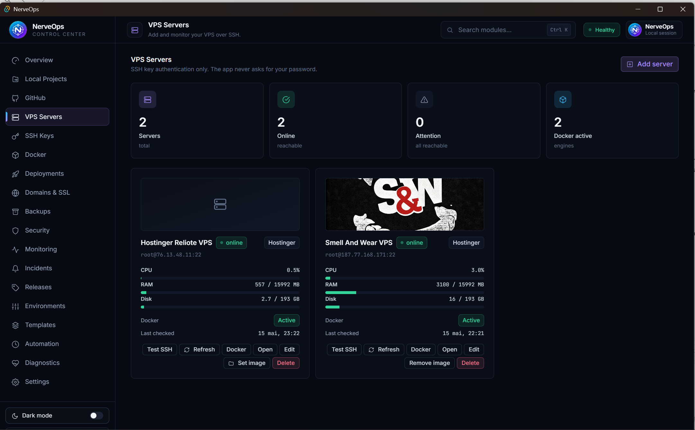
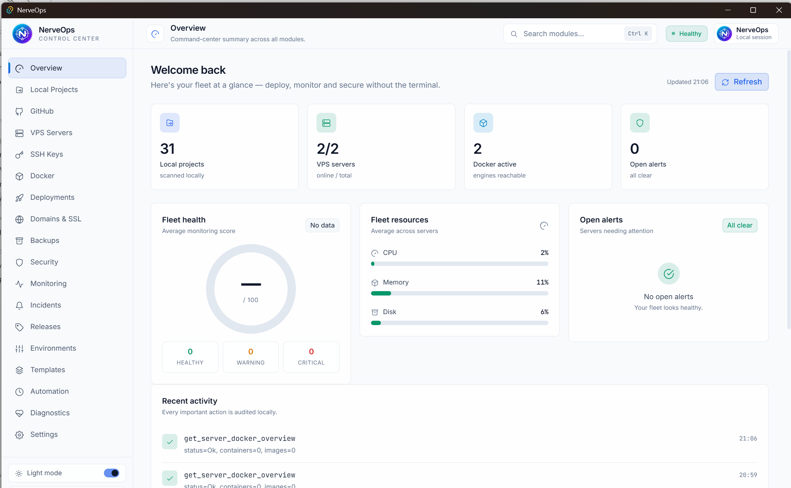
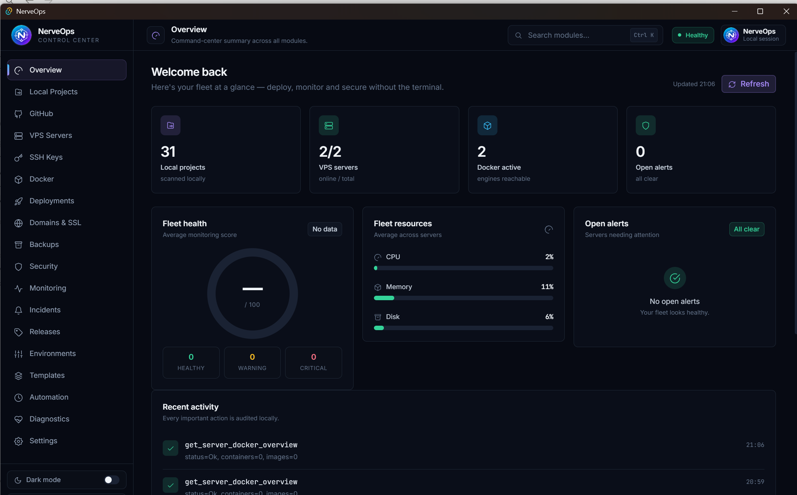
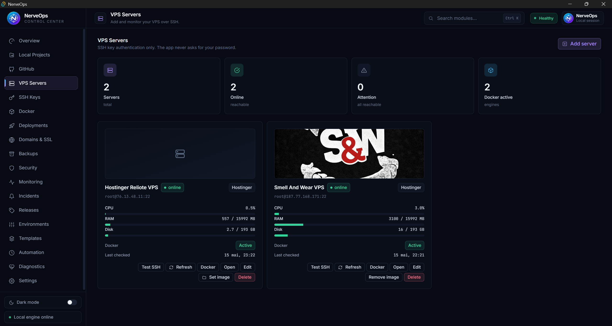
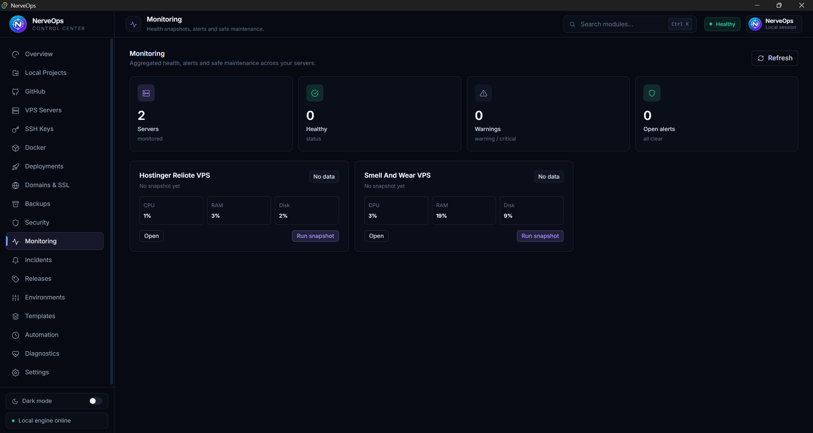
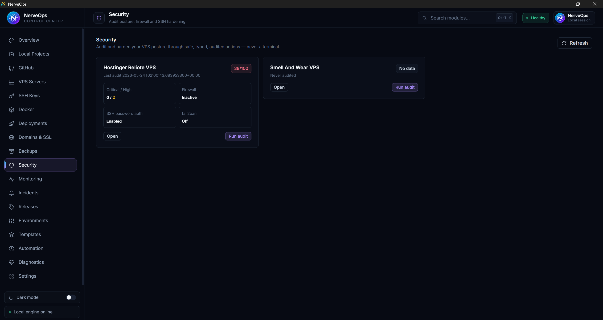
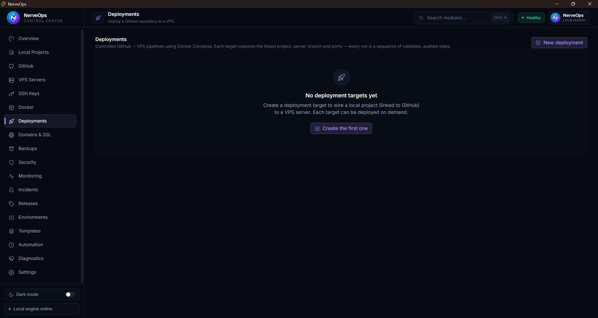

NerveOps — Local DevOps Control Center
Deploy, monitor and secure your apps without the terminal.
A local-only desktop DevOps control center. Manage servers, deployments, Docker, domains, SSL, backups, security, monitoring and more — without ever opening a terminal. Every action is a named, validated, audited command.
NerveOps — Centre de contrôle DevOps local
Déployez, surveillez et sécurisez vos applications sans terminal.
Un centre de contrôle DevOps de bureau, 100 % local. Gérez serveurs, déploiements, Docker, domaines, SSL, sauvegardes, sécurité, surveillance et plus — sans jamais ouvrir de terminal. Chaque action est une commande nommée, validée et tracée.


What can it do?
NerveOps is one control panel for the entire life of a web application — from code on your computer to a live HTTPS website, and everything needed to keep it running.
Que fait-il ?
NerveOps est un seul tableau de bord pour toute la vie d'une application web — du code sur votre ordinateur à un site HTTPS en ligne, et tout ce qu'il faut pour le maintenir.
Install & Build
Get NerveOps running, build it, and generate the Windows installer.
1. Prerequisites
| Tool | Why | Check |
|---|---|---|
| Node.js (LTS 18+) | Runs the Angular interface & build tools | node --version |
| Rust (stable) | Compiles the Rust backend — install from rustup.rs | cargo --version |
ssh client | The app connects to servers via your OS ssh | ssh -V |
| MS C++ Build Tools (Windows) | Rust needs a C++ compiler to build the desktop app | — |
| WebView2 Runtime (Windows) | Renders the UI (preinstalled on Windows 11) | — |
2. Install & run in development
- Install dependencies — open a terminal in the project folder and run
npm install. - Launch the app — run
npm run tauri:dev. The desktop window opens automatically; Rust downloads/compiles on first run.
tauri:dev opens — not a normal browser at http://127.0.0.1:1420. In a browser, server features are disabled on purpose.3. Build the installer (.exe / .msi)
- Run
npm run tauri:build. Tauri builds the optimized UI, compiles Rust in release mode, and packages native installers. - Find the result in
src-tauri/target/release/bundle/: the.msiis inmsi/, the-setup.exeis innsis/.
bundle/nsis/ folder with the -setup.exe, and the installer wizard running.4. Tests & command reference
| Goal | Command |
|---|---|
| Install dependencies | npm install |
| Run in development | npm run tauri:dev |
| Build interface only | npm run build |
| Build desktop installer | npm run tauri:build |
| Rust tests | cargo test --manifest-path src-tauri/Cargo.toml |
| Angular tests | npm test |
Full details: INSTALL_BUILD_GUIDE.md.
Installation & Build
Faire fonctionner NerveOps, le compiler, et générer l'installeur Windows.
1. Prérequis
| Outil | Pourquoi | Vérifier |
|---|---|---|
| Node.js (LTS 18+) | Exécute l'interface Angular & les outils de build | node --version |
| Rust (stable) | Compile le backend Rust — installer depuis rustup.rs | cargo --version |
Client ssh | L'app se connecte aux serveurs via le ssh du système | ssh -V |
| MS C++ Build Tools (Windows) | Rust a besoin d'un compilateur C++ | — |
| WebView2 Runtime (Windows) | Affiche l'interface (préinstallé sous Windows 11) | — |
2. Installer & lancer en développement
- Installer les dépendances — ouvrez un terminal dans le dossier du projet et lancez
npm install. - Lancer l'app — lancez
npm run tauri:dev. La fenêtre de bureau s'ouvre ; Rust se télécharge/compile au premier lancement.
tauri:dev — pas un navigateur sur http://127.0.0.1:1420. Dans un navigateur, les fonctions serveur sont désactivées volontairement.3. Générer l'installeur (.exe / .msi)
- Lancez
npm run tauri:build. Tauri compile l'UI optimisée, Rust en mode release, et empaquète les installeurs natifs. - Trouvez le résultat dans
src-tauri/target/release/bundle/: le.msiest dansmsi/, le-setup.exedansnsis/.
bundle/nsis/ avec le -setup.exe, et l'assistant d'installation.4. Tests & référence des commandes
| Objectif | Commande |
|---|---|
| Installer les dépendances | npm install |
| Lancer en développement | npm run tauri:dev |
| Compiler l'interface seule | npm run build |
| Compiler l'installeur | npm run tauri:build |
| Tests Rust | cargo test --manifest-path src-tauri/Cargo.toml |
| Tests Angular | npm test |
Détails complets : fr/INSTALL_BUILD_GUIDE.md.
User Guide
First launch, the interface, and the recommended order to do things in.
First launch
You land on the Overview dashboard — mostly empty at first, which is normal. The left sidebar holds every feature; the main area shows the selected screen. Each screen has a Refresh button and a clear empty state telling you what to do next.
The recommended start-to-finish path
- Settings — pick your projects folder (scanned one level deep).
- Local Projects — scan the folder; each project shows its stack & Git branch.
- GitHub — paste a Personal Access Token, sync repos, and link each project.
- SSH Keys + VPS Servers — generate a key, add your server, assign the key, Test SSH.
- Deployments — create a target, preview the plan, deploy.
- Domains — map a domain, set DNS, apply the Caddy proxy for automatic HTTPS.
- Protect & watch — Backups, Security audit, Monitoring, Automation.
Where your data is stored
| What | Where |
|---|---|
| App database | %AppData%\VPSManager\vps-manager.db (SQLite) |
| Media / cover images | %AppData%\VPSManager\media\ |
| Secrets | OS keyring (Windows Credential Manager) — never in the database |
.db file.Full details: USER_GUIDE.md.
Guide utilisateur
Premier lancement, l'interface, et l'ordre recommandé des opérations.
Premier lancement
Vous arrivez sur le tableau de bord Vue d'ensemble — presque vide au début, c'est normal. La barre latérale gauche contient chaque fonctionnalité ; la zone principale montre l'écran choisi. Chaque écran a un bouton Refresh et un état vide clair qui indique quoi faire ensuite.
Le parcours recommandé du début à la fin
- Paramètres — choisissez votre dossier de projets (scanné sur un niveau).
- Projets locaux — scannez le dossier ; chaque projet montre sa stack & sa branche Git.
- GitHub — collez un jeton d'accès personnel, synchronisez, et liez chaque projet.
- Clés SSH + Serveurs VPS — générez une clé, ajoutez votre serveur, assignez la clé, Test SSH.
- Déploiements — créez une cible, prévisualisez le plan, déployez.
- Domaines — associez un domaine, configurez le DNS, appliquez le proxy Caddy pour le HTTPS automatique.
- Protéger & surveiller — Sauvegardes, audit de Sécurité, Surveillance, Automatisation.
Où sont stockées vos données
| Quoi | Où |
|---|---|
| Base de données | %AppData%\VPSManager\vps-manager.db (SQLite) |
| Médias / couvertures | %AppData%\VPSManager\media\ |
| Secrets | Trousseau du système (Gestionnaire d'identifiants) — jamais dans la base |
.db.Détails complets : fr/USER_GUIDE.md.
Features
Every screen in NerveOps. Click a card for the route; full step-by-step walkthroughs are in the Features Guide.
Fonctionnalités
Chaque écran de NerveOps. Cliquez une carte pour la route ; les procédures complètes sont dans le Guide des fonctionnalités.




Deployment flow
From a local project to a live HTTPS website — no terminal.
The big picture
Local project
Your code on your computer
GitHub
Pushed to a repository
VPS + Docker
Fetched & run with Compose
Caddy / HTTPS
Served to visitors securely
Step by step
- Settings → choose your projects folder.
- Local Projects → scan;
Initialize Gitif needed;Linkto GitHub. - GitHub → connect (Publish workflows),
Sync repositories. - SSH Keys →
Generate key(private key stays on your disk). - VPS Servers →
Add server, assign the key,Test SSH,Install on this server. - Deployments →
New deployment, configure (project, server, branch, ports),Preview plan, thenSave target & start deployment. ⚠️ Confirm "Start deployment?". - Domains →
New route, enter the domain, add the shown DNS A record,Check DNS, thenApply proxy config. HTTPS is automatic. - Protect → Backups, Security audit, Monitoring, mark the release stable.
View recent logs, run a diagnostic in the Incident Center, or roll back from Releases to the last stable version.
Full guide: DEPLOYMENT_FLOW_GUIDE.md.
Flux de déploiement
D'un projet local à un site HTTPS en ligne — sans terminal.
La vue d'ensemble
Projet local
Votre code sur votre ordinateur
GitHub
Poussé vers un dépôt
VPS + Docker
Récupéré & exécuté avec Compose
Caddy / HTTPS
Servi aux visiteurs en sécurité
Pas à pas
- Paramètres → choisissez votre dossier de projets.
- Projets locaux → scannez ;
Initialize Gitsi besoin ;Linkà GitHub. - GitHub → connectez (Publish workflows),
Sync repositories. - Clés SSH →
Generate key(la clé privée reste sur votre disque). - Serveurs VPS →
Add server, assignez la clé,Test SSH,Install on this server. - Déploiements →
New deployment, configurez (projet, serveur, branche, ports),Preview plan, puisSave target & start deployment. ⚠️ Confirmez « Start deployment? ». - Domaines →
New route, saisissez le domaine, ajoutez l'enregistrement A DNS affiché,Check DNS, puisApply proxy config. Le HTTPS est automatique. - Protéger → Sauvegardes, audit de Sécurité, Surveillance, marquez la version stable.
View recent logs, lancez un diagnostic dans le Centre d'incidents, ou revenez en arrière depuis Versions vers la dernière version stable.Guide complet : fr/DEPLOYMENT_FLOW_GUIDE.md.
Security & safety
How NerveOps protects you and your secrets.
The safety model
No raw commands
The interface can never send an arbitrary shell/SSH/Docker command. No terminal widget exists.
Preview, then confirm
Firewall, hardening, proxy, backups, restore, templates and rollback all show a plan first, then ask.
SSH keys only
The app never asks for, displays or stores your server password.
Local only
No cloud, no paid service, no background server. Automation runs only while the app is open.
How secrets are protected
- Secrets live in the OS keyring (Windows Credential Manager), never in the database, logs, reports or exports.
- SSH private keys stay on disk and are never shown or exported — only the public key is.
- Secret values are masked (
••••••••); revealing one is an audited, confirmed action. - Logs are redacted on fetch; deployment previews redact env values; the support bundle is sanitized.
Hardening a server
- Run audit on the Security screen to get a score / 100 and top recommendations.
- Firewall → add an ALLOW rule for SSH, then
Enable firewall. - SSH → confirm key login works, then
Disable password authentication(auto-rolls-back if it fails). - Review exposed services & fail2ban; re-run the audit.
Full guide: SECURITY_AND_SAFETY_GUIDE.md.
Sécurité & sûreté
Comment NerveOps vous protège, vous et vos secrets.
Le modèle de sûreté
Aucune commande brute
L'interface ne peut jamais envoyer de commande shell/SSH/Docker arbitraire. Aucun terminal n'existe.
Aperçu, puis confirmation
Pare-feu, durcissement, proxy, sauvegardes, restauration, modèles et retour arrière montrent un plan d'abord.
Clés SSH uniquement
L'app ne demande, n'affiche ni ne stocke jamais votre mot de passe serveur.
100 % local
Aucun cloud, aucun service payant, aucun serveur en arrière-plan. L'automatisation ne tourne que si l'app est ouverte.
Comment les secrets sont protégés
- Les secrets vivent dans le trousseau du système (Gestionnaire d'identifiants), jamais dans la base, journaux, rapports ou exports.
- Les clés privées SSH restent sur le disque et ne sont jamais affichées ni exportées — seule la clé publique l'est.
- Les valeurs secrètes sont masquées (
••••••••) ; révéler est une action tracée et confirmée. - Les journaux sont occultés à la récupération ; les aperçus de déploiement occultent les valeurs d'env ; le bundle de support est assaini.
Durcir un serveur
- Run audit sur l'écran Sécurité pour un score / 100 et des recommandations.
- Pare-feu → ajoutez une règle ALLOW pour SSH, puis
Enable firewall. - SSH → confirmez que la connexion par clé marche, puis
Disable password authentication(auto-retour-arrière en cas d'échec). - Examinez les services exposés & fail2ban ; relancez l'audit.
Guide complet : fr/SECURITY_AND_SAFETY_GUIDE.md.
Troubleshooting
Fixes for the most common problems.
Buttons are greyed out / features disabled
You're in browser mode. Use the desktop window from npm run tauri:dev (or the installed app), not a browser at 127.0.0.1:1420.
tauri:build fails to compile Rust
Install Rust (cargo --version) and, on Windows, the MS C++ Build Tools and WebView2. The first build is slow — let it finish.
"Read-only mode — push disabled" (GitHub)
Reconnect on the GitHub screen choosing Publish workflows with a token that has Contents: Read and write.
Test SSH fails
Check host/port/username, confirm the public key is installed on the server (Install on this server), and that ssh -V works.
"Check DNS" doesn't confirm / site has no HTTPS
Add the exact A record shown; DNS can take time to propagate. DNS must point to the server before the certificate is issued; then Apply proxy config and Reload Caddy.
A deployment step failed
Expand the failed step, use View recent logs, run a diagnostic in the Incident Center, and if needed roll back from Releases.
A restore overwrote the wrong thing
Prefer Restore to new dir (safe). Restore to original overwrites live files and cannot be undone.
Generate a sanitized support bundle, and Copy it to share. Full list: TROUBLESHOOTING.md.Dépannage
Solutions aux problèmes les plus courants.
Les boutons sont grisés / fonctions désactivées
Vous êtes en mode navigateur. Utilisez la fenêtre de bureau de npm run tauri:dev (ou l'app installée), pas un navigateur sur 127.0.0.1:1420.
tauri:build échoue à compiler Rust
Installez Rust (cargo --version) et, sous Windows, les MS C++ Build Tools et WebView2. Le premier build est lent — laissez-le finir.
« Read-only mode — push disabled » (GitHub)
Reconnectez-vous sur l'écran GitHub en choisissant Publish workflows avec un jeton ayant Contents: Read and write.
Test SSH échoue
Vérifiez hôte/port/utilisateur, confirmez que la clé publique est installée sur le serveur (Install on this server), et que ssh -V fonctionne.
« Check DNS » ne confirme pas / pas de HTTPS
Ajoutez l'enregistrement A exact affiché ; le DNS peut mettre du temps à se propager. Le DNS doit pointer vers le serveur avant l'émission du certificat ; puis Apply proxy config et Reload Caddy.
Une étape de déploiement a échoué
Dépliez l'étape, utilisez View recent logs, lancez un diagnostic dans le Centre d'incidents, et si besoin revenez en arrière depuis Versions.
Une restauration a écrasé la mauvaise chose
Préférez Restore to new dir (sûr). Restore to original écrase les fichiers live et ne peut être annulé.
Generate un bundle de support assaini, et Copy-le à partager. Liste complète : fr/TROUBLESHOOTING.md.Glossary
Every technical term, explained simply. Type in the search box above to filter.
Glossaire
Chaque terme technique, expliqué simplement. Tapez dans la recherche ci-dessus pour filtrer.